The Orkney islands are an archipelago consisting of 70 islands (20 inhabited) to the North East of Scotland, located between Scotland mainland and the Shetland Islands. The soil is rich, and agriculture is everywhere, and has been since ancient times. Nowadays, the Orkneys showcase neolithic sites to visit such as farmhouses of about 5000 year old, standing stones, and burying chambers. Coastal nature on the Orkneys is also amazing, there are cliffs full of birds (in the spring when they are nesting), amazing beaches and very strong tides up to about 8 knots that spice up the waters around Orkney. Special underwater generators have been installed to tab electricity off the strong tidal currents. In short, lots to see and explore. We took 2 kayaks with us, and also our tandem bike.
The ferry from Scotland dropped us in St. Margaret’s Hope, a town on the island of South Ronaldsay, in the South East corner of the Orkneys. We stayed right in town and our parking was at the water front.
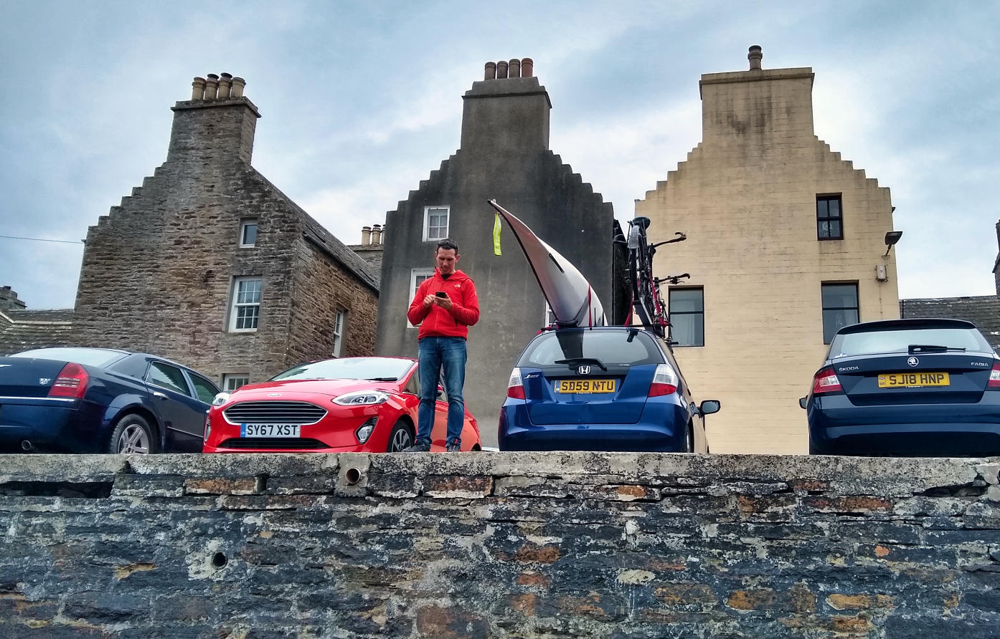
Coming into the town the ferry passed by many bunkers that remained from WWII, showcasing another important part of the History of the Orkneys. The Southern islands surround the Scapa Flow, natural protective area for the UK’s army float during the world wars. Apart from one submarine sneaking in and sinking a ship, the Scapa Flow did it’s duty, though other casualties happened around the Orkneys of which we would see remembrance plaques later on our trip.
South Ronaldsay has a great coast line to the East, very cliffy. I decided to run it, while Leigh was going for a resting day, taking a hike from the bottom tip so we would meet halfway. Unfortunately, it was very foggy, so at times I couldn’t even see the water down at the cliffs, but every now and then the coastal trail took me right down to a beach. Just a little before I met Leigh I came across a little restaurant, so we walked back to get a hot chocolate. It started raining, but the benefits of our AirBnb was that we could get dry again.
The islands East of the Scapa Flow are connected by the Churchill barriers, causeways filled in during WWII after that submarine managed to sneak in in between them. Before the barriers were there, boats were sunk to protect the entry ways through these islands, and some of these can still be seen while driving across. Or kayaking across. One of the islands harbours the Italian church, made from scraps by Italian war prisoners during WWII. They’ve done an amazing job, and the church is still very much intact. You can drive to Orkney mainland, the largest island with the capital Kirkwall, using the Churchill barriers, which is a nice city to explore. We visited, among other things, a well maintained church, and the Orkney museum, which was located in a a historical building.
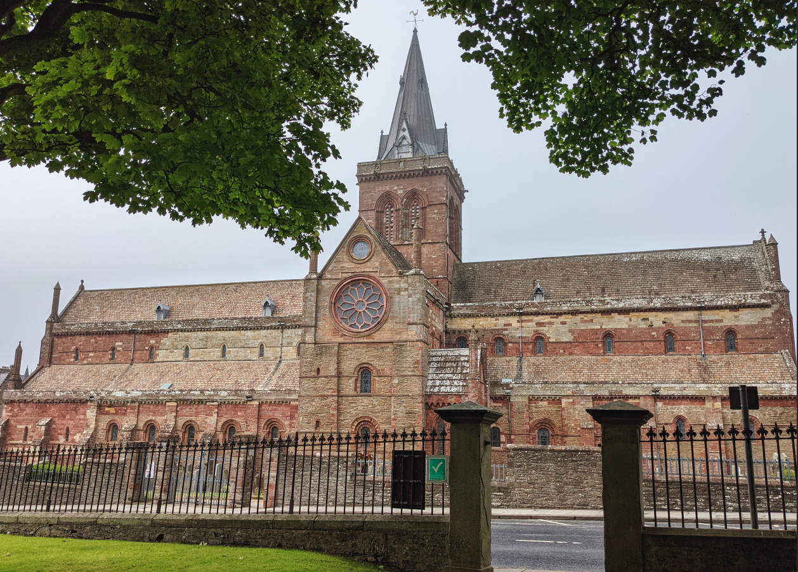
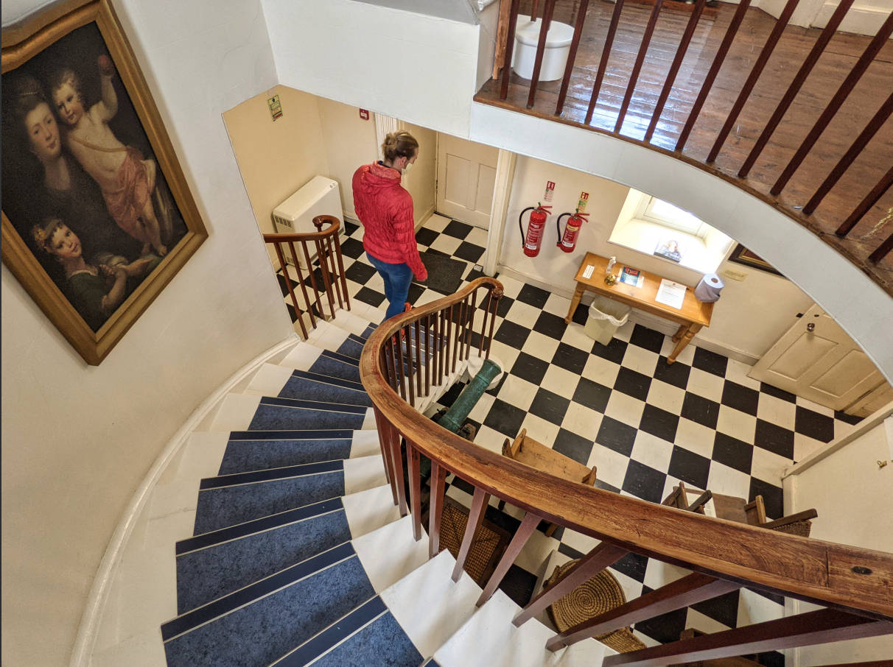
After exploring the South-East corner, we took a ferry to Westray, the most north-westerly island of the Orkneys. Straight from the ferry we drove and hiked to Castle O’Burrian, a sea stack where puffins were breeding. As always when we see the little fellows, hours passed by so quickly while we were just watching them go about with their daily business. Such funny looking birds. Their chicks, called pufflings, were already a bit grown up, so it was getting quite busy in their burrows.
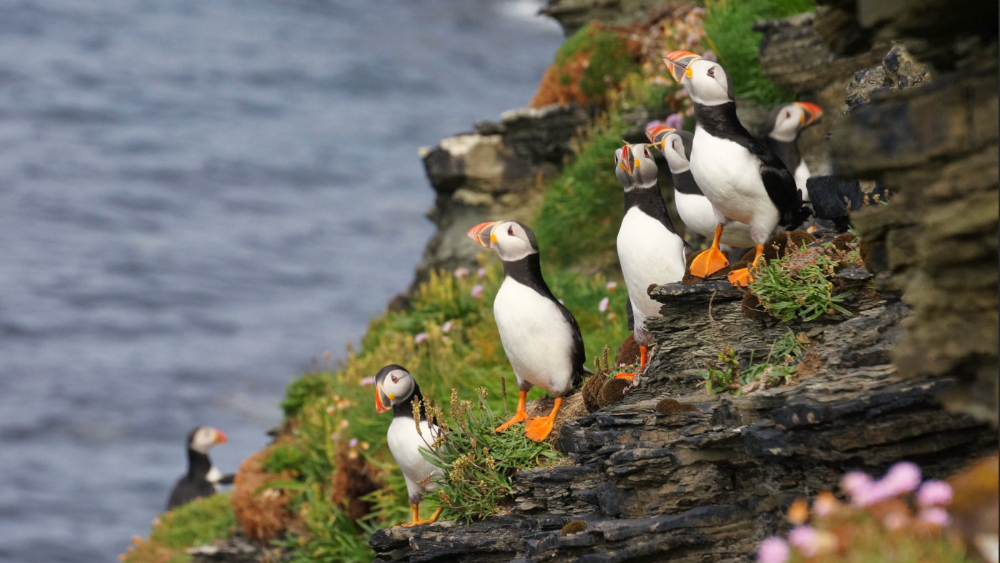
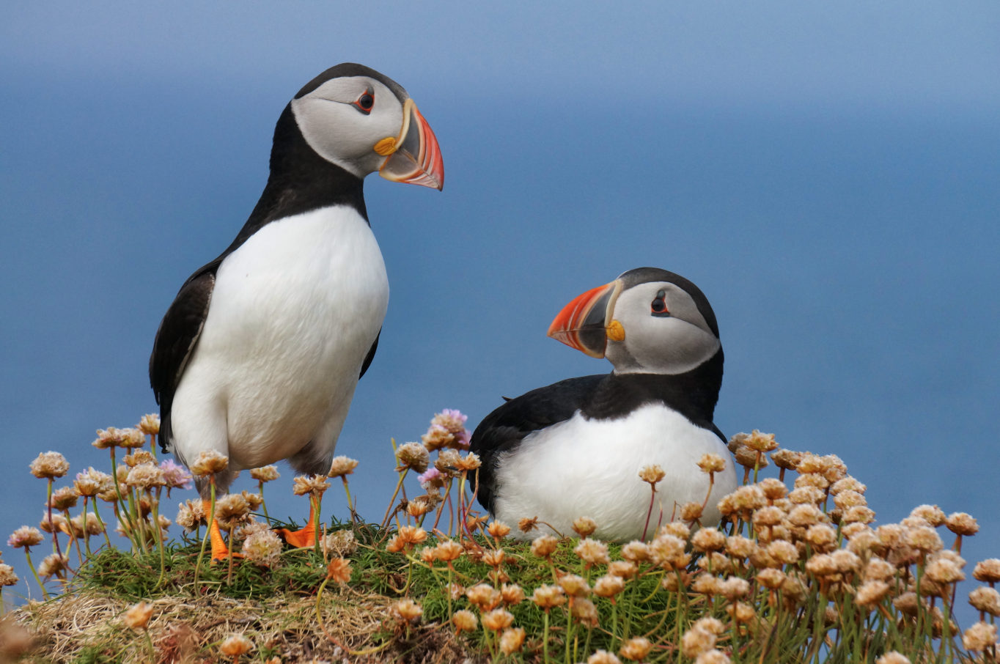
We also explored Pierowall, the capital of Westray. I love these remote coastal towns, with about 50 houses perhaps, a community garden that sold strawberries in the grocery store, and the lady of the grocery store having to walk around the store with the bank-card device to try to pick up a phone signal for about 20 minutes so we could use our card and pay for our groceries. All the while in the background we could hear locals chatting about their gardens and through a window we could look over to the harbour where a mom was taking her 2 kids out in a little boat to go check on her lobster/crab traps. Being there felt to me like a soft blanket and I could just hang out for hours being part of the scene. Though, clearly, we were recognized as non-locals. Also everyone waved at us, all the time, even when passed by a car. I could get used to this in a heartbeat. This is true remote living, with a twice daily 1.5 h ferry to Orkney mainland, Kirkwall. Or, if you consider Inverness the first less-remote city, a 1 h flight to Inverness, or a 1 h drive + ~ 2 h ferry to Scotland Mainland, then a 2.5 hour to Inverness. But, what is there not to like, sandy beaches, cliffs and puffins right there on your doorstep.
The up were the highest cliffs on the island, which had a lighthouse on top of them, the most Northern corner of the island. We biked up, and brought a pick-nick with us. We had not done our research on these cliffs, and thus were pleasantly surprised by a ganetary, a colony of breeding gannets, mixed with puffins, razorbills, fulmars and guillemots, with the seagulls and every now and then a skua to complete the picture. Again, time flew by as we were watching the chaos. Some birds had little chicks, the gannets had massive chicks, we saw one that was as large as a parent, but still fluffy as a chick. The parent had to sit next to it, because on top was just not going to work. Gannets have their nests on picking distance from each other and, even though it looks like they have been sitting at their nests for quite a while, still attempt to pick at birds that come too close. These birds like their personal space, that’s for sure.
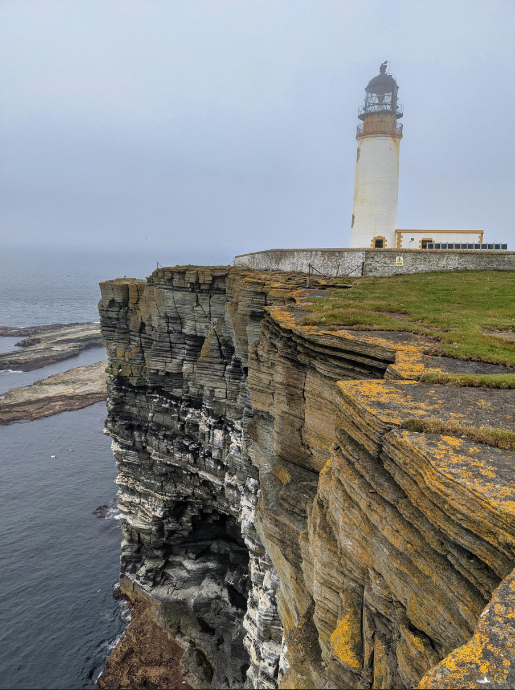
In the evening we paddled out to the Holm of Faray, a little island south of Westray, where we would camp. It was also our first real crossing on the Orkneys, and we were happy to learn that we could manage, though obviously we had planned our crossing to be at a time with little movement.
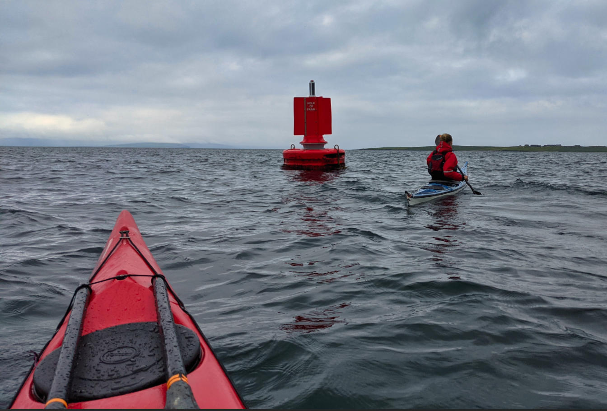
We made our way over to Stromness, an absolutely beautiful town in the South West corner of mainland Orkney with very narrow streets.
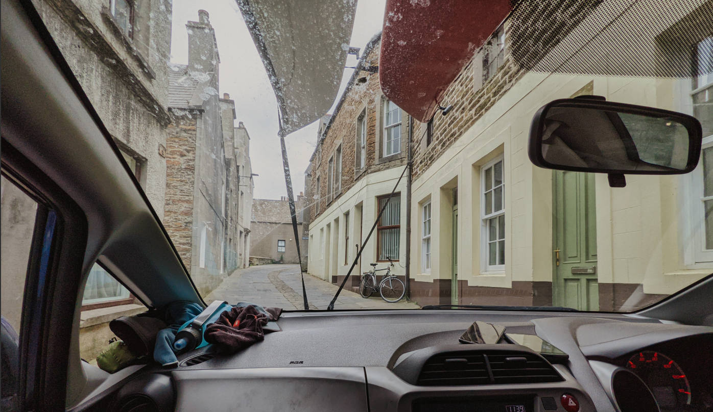
Stromness deserved more time than we spent because we dropped the car off to go on another paddle adventure. The winds were very mild, so we had opted to explore the West coast of Orkney mainland. Starting in Stromness, it meant we had to first paddle through the strait of Hoy, where the currents are the largest of the entire Orkneys. Even when we left, close to where they were the lowest, we could already hear them. However, paddling through, they were not as whirley as I was afraid they would be, and we managed no problem.
The cliffs were amazing, birds, sea stacks and caves all over the place.
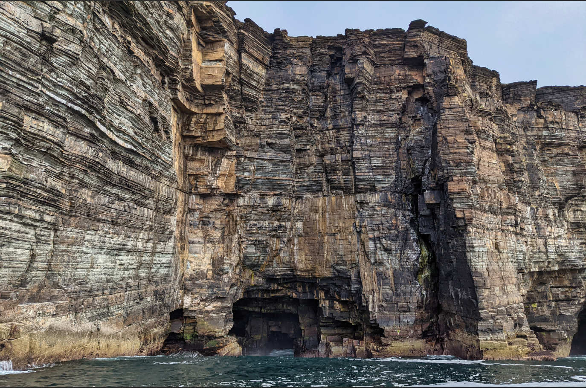
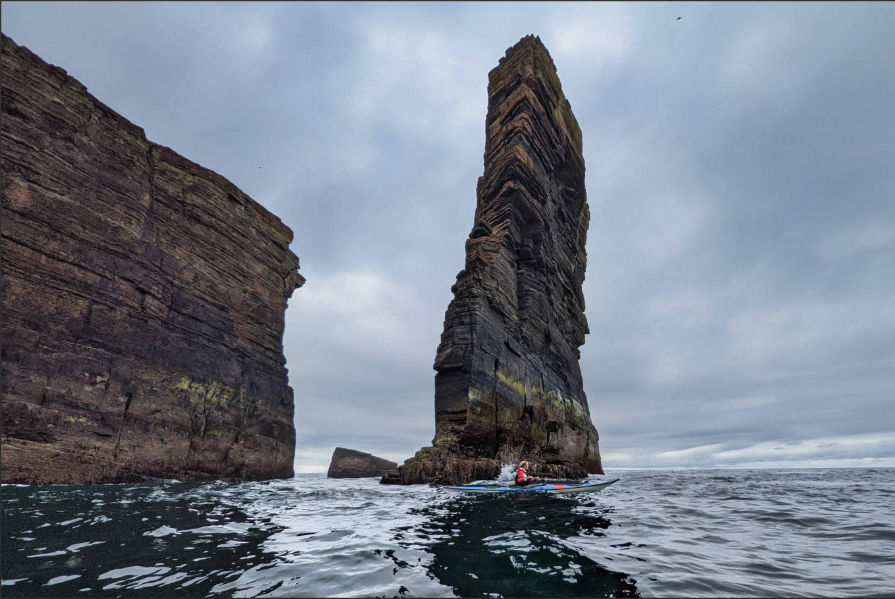
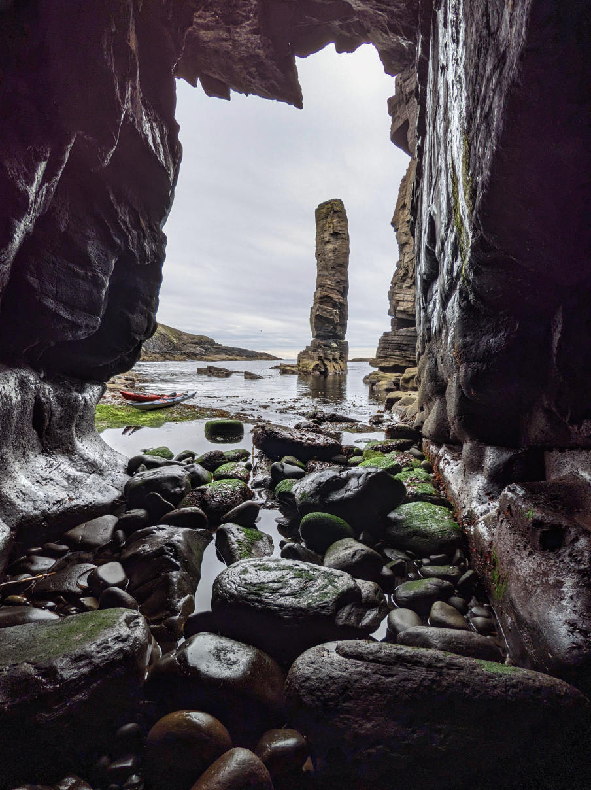
And, when we looked careful, we could even find some very well camouflaged seals hanging out on the rocks.
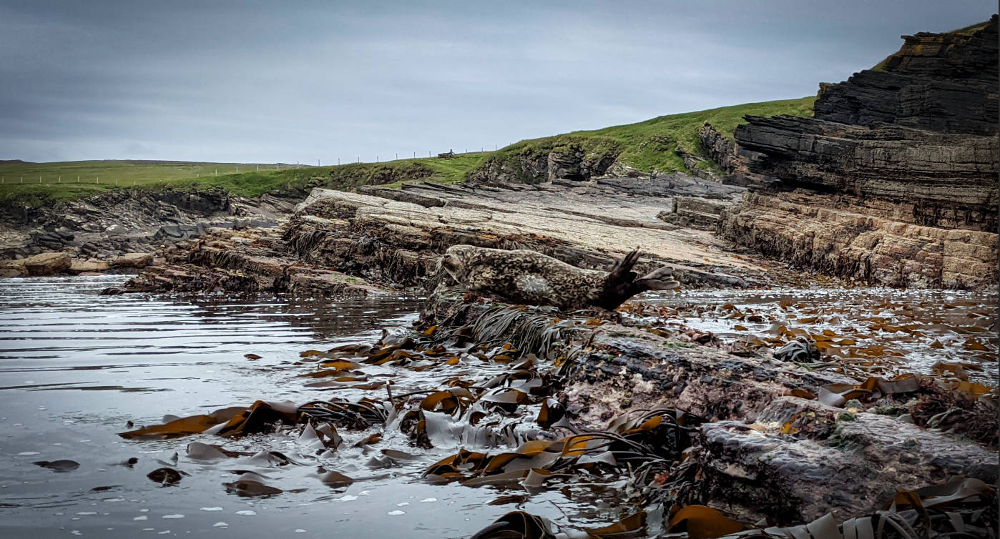
New for us were the blowholes that we came across. We were looking at one, and on a ridge quite a ways above the blowhole were some birds. At some point, a very large wave filled the hole and a massive sprout came out, so high that the birds got wet and they squealed in surprise.
We pitched the tent in Yernesby and watched the sun setting over a calm sea.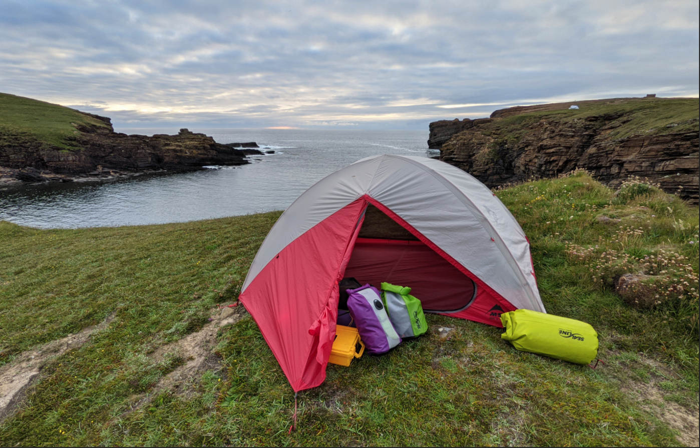
The next morning we got up and paddled to Skara Brae, a historical tourist destination for having a look at a 5000 year old settlement. However, there was such a line-up to get in, that we got discouraged and instead stayed on the large beach for some lunch. We found the public toilets, of which there was one here, very clean, and used them wherever we could. More amazing cliffs followed after lunch, all the way up to the Brough of Birsay, an island that marks the end of the West coast of Orkney mainland. You can walk to this island at low tide, which is why it was very busy when we arrived. This island has a lighthouse and pictisch, norse and medieval remains on them, so well worth the visit.
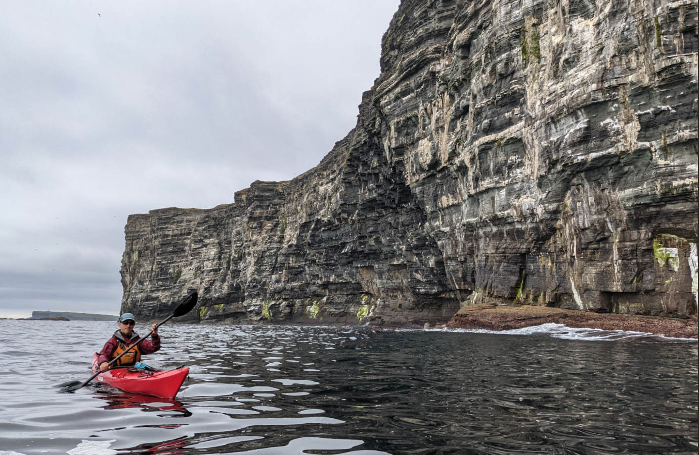
We managed to be back in Stromness just in time for the fish and chips food truck, and enjoyed a relaxing evening in the town, with kids in wetsuits playing in the harbour water next to the lifeboat, and people just strolling about. See banner for a view of the Stromness harbour
We couldn't leave without having a look at the stone circles at the heart of Orkney, the Ring of Brodar and the standing stones of Stenness, with archeological digging sites nearby where amazing new information about Orkneys past shows up. Very fascinating and a great place to be.
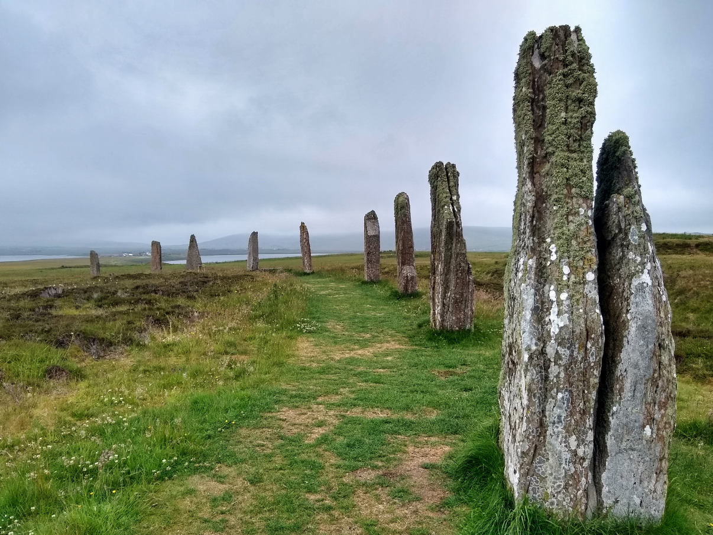
I’d say Orkney was well worth the visit, and there is definitely a lot more left to explore.